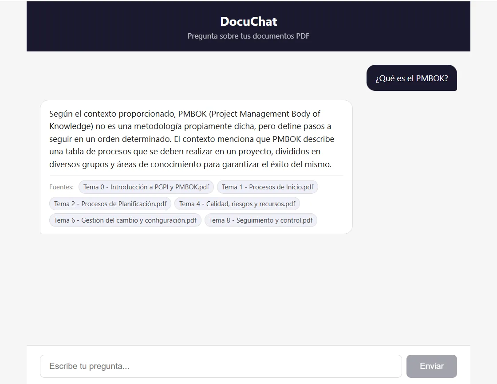

DocuChat
Asistente RAG que responde sobre tus documentos y cita sus fuentesA RAG assistant that answers from your documents and cites its sources
Poké-Hub
Subes tus PDF, preguntas en lenguaje natural y cada respuesta indica de qué documento sale. Si la respuesta no está en los documentos, lo dice en lugar de inventarla.Upload your PDFs, ask in plain language and every answer shows which document it comes from. If the answer isn't in your documents, it says so instead of making it up.

- Python
- FastAPI
- PostgreSQL
- pgvector
- Ollama
- Gemini
- React
- Docker Compose
- Búsqueda híbrida: vectores con pgvector y texto completo de PostgreSQL, fusionados con Reciprocal Rank Fusion. Con ella, «¿Qué es el PMBOK?» pasó de no encontrar el fragmento que lo define a ponerlo el primero.Hybrid search: pgvector similarity plus PostgreSQL full-text search, fused with Reciprocal Rank Fusion. It took “What is the PMBOK?” from missing the defining passage to ranking it first.
- Un agente con llamadas a herramientas que funciona con modelos locales (Ollama) o con Gemini.An agent with tool calling that runs on local models (Ollama) or on Gemini.
- Evaluación con 15 preguntas: recall@8 del 60 %, una cifra honesta tras corregir una métrica que la inflaba hasta el 93 %.Evaluated on 15 questions: 60% recall@8, an honest figure after fixing a metric that had inflated it to 93%.
- Cada consulta registra el proveedor, las herramientas usadas, los fragmentos recuperados y la latencia.Every query logs the provider, the tools used, the passages retrieved and the latency.